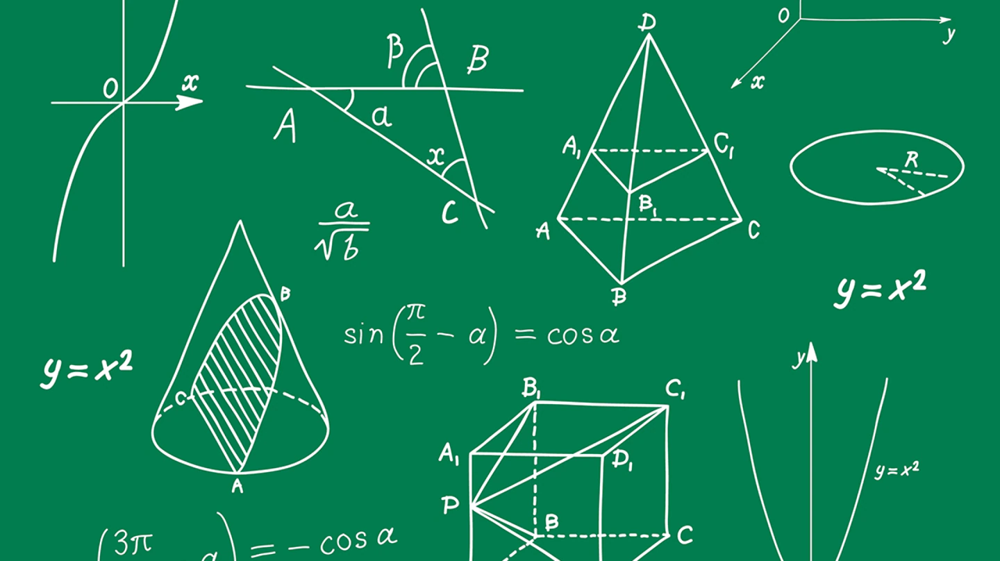
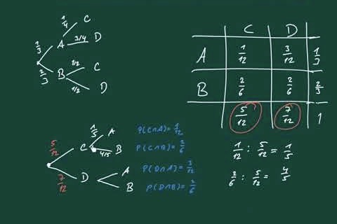

Algebra ist der Zweig der Mathematik, der bei der Darstellung von Problemen oder Situationen in Form von
mathematischen Ausdrücken hilft. Es beinhaltet Variablen wie x, y, z und mathematische Operationen wie Addition,
Subtraktion, Multiplikation und Division, um einen sinnvollen mathematischen Ausdruck zu bilden. Alle Zweige der
Mathematik wie Trigonometrie, Analysis, Koordinatengeometrie beinhalten die Verwendung von Algebra. Ein einfaches
Beispiel für einen Ausdruck in der Algebra ist 2x + 4 = 8.
Algebra beschäftigt sich mit Symbolen und diese Symbole werden mit Hilfe von Operatoren miteinander in Beziehung
gesetzt. Es ist nicht nur ein mathematisches Konzept, sondern eine Fähigkeit, die wir alle in unserem täglichen
Leben anwenden, ohne es überhaupt zu merken. Algebra als Konzept zu verstehen ist wichtiger als Gleichungen zu
lösen und die richtige Antwort zu finden, da es in allen anderen Themen der Mathematik nützlich ist, die Sie in
Zukunft lernen werden oder die Sie bereits in der Vergangenheit gelernt haben.
Geometrie

In der Geometrie befasst man sich mit räumlichen und mit nicht räumlichen Gegenständen, Formen und Gebilden sowie
deren Abmessungen, Abständen und sonstigen Eigenschaften. Das verdeutlicht auch die wörtliche Übersetzung des
Wortes „Geometrie“ aus dem Altgriechischen: „Landvermessung“ oder „Vermessung der Erde“. Eine Definition der
Geometrie ist:
Die Lehre von zweidimensionalen Figuren wie Punkten, Geraden und Vielecken sowie dreidimensionalen Körpern wie
Kugeln und Würfeln.
Hier findest du alles Wichtige zu dem Thema Geometrie. Mit unseren Klassenarbeiten kannst du den Ernstfall
trainieren.
Stochastik

Die Stochastik ist ein Teilgebiet der Mathematik und befasst sich mit Zufallsprozessen. Sie umfasst die beiden
Teilbereiche Statistik und Wahrscheinlichkeitstheorie.
Die Wahrscheinlichkeit, im Lotto zu gewinnen, liegt bei 1 : 139838160. Diese Wahrscheinlichkeit wurde mithilfe
der Stochastik berechnet, um die es in dieser Erklärung geht. In dieser Erklärung erfährst Du die Definition und
die Grundlagen und erhältst eine Übersicht der Stochastik.